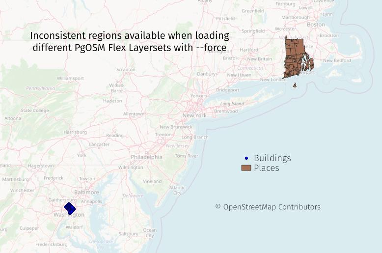

Force Load
Added in PgOSM Flex 0.8.1.
⚠️ Danger ahead ⚠️
The examples in this section can do bad things in production setups.
The --force feature exists for development use cases.
Most users should consider moving old data out of the way using the methods described in the relocate data.
PgOSM Flex Tries to be Safe
PgOSM Flex attempts to avoid accidentally overwriting existing data
when using a database
external to the PgOSM Flex Docker container.
It does this by checking the data stored in the osm.pgosm_flex table.
The
--forcefeature only applies to external database connections. The internal database is always dropped and recreated when using the built-in database.
This section assumes you have followed the instructions on the
Postgres External section including
setting up permissions.
The protection against overwriting data is built into the pgosm_flex.py logic
ran via docker exec. With PgOSM Flex 0.8.1 and later, running the following
command twice in a row will result in an
docker exec -it \
pgosm python3 docker/pgosm_flex.py \
--ram=8 \
--region=north-america/us \
--subregion=district-of-columbia
Running the docker exec step a second time would result in
the following error.
2023-05-29 08:08:19,495:ERROR:pgosm-flex:import_mode:Prior data exists in the osm schema and --force was not used.
2023-05-29 08:08:19,495:ERROR:pgosm-flex:pgosm_flex:Not okay to run PgOSM Flex. Exiting
Using --force
To overwrite and reload data, use the --force option with the docker exec
command.
docker exec -it \
pgosm python3 docker/pgosm_flex.py \
--ram=8 \
--region=north-america/us \
--subregion=district-of-columbia \
--force
Using --force outputs the following message during import when prior data exists.
2023-05-14 15:09:12,457:WARNING:pgosm-flex:import_mode:Using --force, kiss existing data goodbye
Only overwrites tables in new --layerset
Using --force can cause unexpected mismatches between tables when different
layersets are used. This section illustrates this problem.
First run docker exec as shown in the quick start guide.
This loads the District of Columbia subregion with the default layerset.
docker exec -it \
pgosm python3 docker/pgosm_flex.py \
--ram=8 \
--region=north-america/us \
--subregion=district-of-columbia
Now run again with --force and --layerset=minimal. A different region
(Rhode Island) is also used to help illustrate the problem.
docker exec -it \
pgosm python3 docker/pgosm_flex.py \
--ram=8 \
--region=north-america/us \
--subregion=rhode-island \
--force \
--layerset=minimal
The following image shows that while the osm.place_polgyon data is correctly loaded
with the Rhode Island region's data, the osm.building_point retained the
data from Washington D.C. This happens because --force only allows PgOSM Flex
to overwrite data as defined by the --layerset option. If tables were created
by layers not used in the latest --layerset, they will be left in the database
as-is.

While this problem is most apparent when using different regions, it can also be a problem with the same region if a user querying the data assumes all tables were updated at the same time.